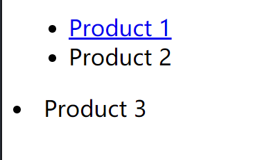
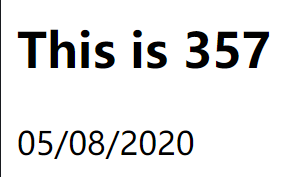
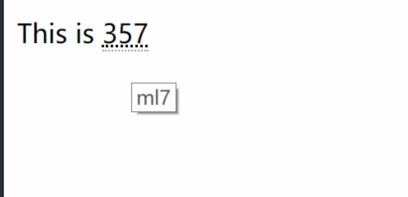
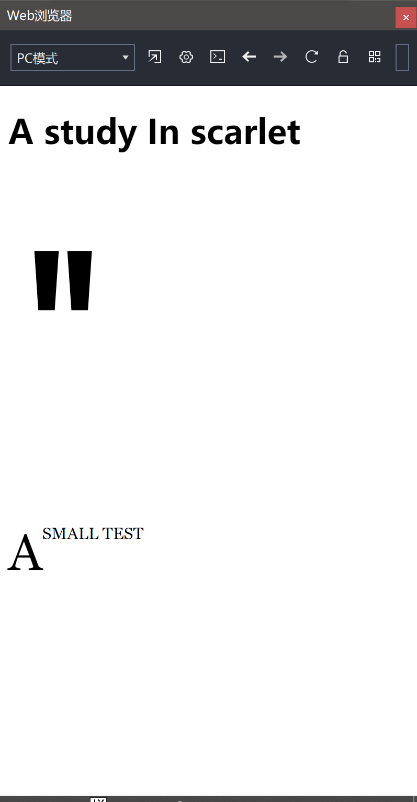
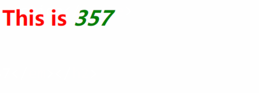

CSS Mastery Adavanced Web Standards Solutions,Third Edition
默认浏览器chrome
chapter1–基础知识
<li>list标签，<ul>无序列表1
2
3
4
5
6
7<body>
<ul class="product-list">
<li><a href="www.baidu.com">Product 1</a></li>
<li>Product 2</li>
</ul>
<li>Product 3</li>
</body>

ID与class属性
一个ID只能应用到页面中的一个元素，是不能把模块定义为可重用的模板的，ID用来标识特定模块的特定实例
有同样的class属性就可以获得相应的样式，一般利用class作为CSS的接入点，ID可以用于在文档中标识元素
结构化元素
在某些时刻为了添加样式的接入点，我们会用到<div class="xxx">，但是它并没有语义价值，而在html5中可以改用<article> <header>标签，但是会出现重用的情况，在这种情况下，两者结合，使用1
2
3
4
5<article class="post">
<header class="post-header">
<h1>test</h1>
</header>
</article>
1 | .post{ |
div与span
确保真的无语义的情况下再使用,span用于在文本流中建立结构
重新定义的表现性文本元素
<b> <i>和<em> <strong>的区别在于，后两者更有强调意味，视觉上的表现没有区别，但是强调了语义正确的选择
扩展HTML语义
ARIA指的是accessible rich Internet application,为文档中的不同元素指定其包含什么内容/提供什么功能
当创建一个音量滑动部件时，应包含role="slider"
微格式用来扩展HTML语义，微数据为HTML添加结构化数据
chapter2–添加样式
css选择符
id->#开头，class->.开头，后代中间隔一个空格1
2
3
4<article id="latest">
<h1>This is 357</h1>
<p class="date-posed"><time datetime="2020-08-05">05/08/2020</time></p>
</article>
1 | #latest h1{ |

子选择符只选择直接后代，(孙子是不行的),子组合子>
相邻同辈选择符，组合子+
一般同辈选择符,组合子~
这种同辈的选择符一般不会选择前面的同类，这是因为css的渲染是按照从上到下顺序进行的
通用选择符*,但是如果将内外边距置0会影响button等元素，重设样式最好还是指定1
.product > *{}
选择了class=product类下直接子代的所有元素
根据是否存在某个属性来选择元素,效果是鼠标悬停时会出现内容1
<p>This is <abbr title="ml7">357</abbr></p>
1 | abbr[title]{ |

特定属性值input[type="submit"]
匹配模式:a[href^="http://],开头a[href$=".com]",结尾a[href*="/about/"],加星号，匹配字符属性值a[rel~=next]，匹配空格分隔的字符串中的属性值a[lang|=en]，开头指定是en或者指定值后面跟着一个短划线en en-US
当我们希望选择的页面区域不是通过元素来表示的时候，可以使用伪元素，如::first-letter来选择一段文本的第一个字符1
2
3
4
5
6
7
8
9
10
11
12
13
14.chapter::before{
content:'"';
font-size: 15em;
}
.chapter p::first-letter{
float:left;
font-size: 3em;
font-family: Georgia, 'Times New Roman', Times, serif;
}
.chapter p::first-line{
font-family:Georgia, 'Times New Roman', Times, serif;
text-transform:uppercase;
}
1 | <section class="chapter"> |

当我们希望基于文档结构以外的情形来添加样式时(超链接.etc)，可以使用伪类选择符1
2
3
4
5a:link{} //未访问过的链接
a:visited{} //访问过的链接
a:hover,
a:focus{} //悬停及获取键盘焦点
a:active{}//活动状态
目标与反选
:target伪类匹配的元素有一个id属性，并且属性值出现在url的#后面:not()反选伪类排除某些选择符1
.comment:target:not(.comment-download){}
结构化伪类
:nth-child(),括号里可以带参数如odd even 3n+1 3(n从零开始):nth-child(-n+3)只会选择前三个元素:nth-last-child()倒序:first-child :last-child:nth-of-type() :nth-last-of-type()：忽略非指定类型的元素
结构化伪类不能支持老旧的浏览器
example:1
2.column:nth-last-of-type(4):first-child,
.column:nth-last-of-type(4):first-child ~ .column{}
指的是当column类下有4个同样类型的child时，第一个child与同类下first-child相邻的其它同辈
表单伪类
1 | <label for="name">Name: </label> |
1 | /* 为带有required(必选)属性的元素添加样式 */ |
type=”number”::in-range,:out-of-range
针对readonly属性,:read-only(有readonly)，:read-write(无readonly)
层叠
层叠机制处理一个元素多个规则的问题
可以用!important覆盖任何规则1
2
3p{
font-size:1.5em ;
}
优先级:
- 标注为
!important的用户样式 - 标注为
!important的作者样式 - 作者样式
- 用户样式
- 浏览器(用户代码)默认样式
特殊性
四个级别:
- 行内样式a=1
- b=ID选择符的数目
- c=类选择符，伪类选择符，属性选择符的数目
- d=类型选择符，伪元素选择符的数目
example:1
2
3选择符:style=""
特殊性:1,0,0,0
十进制特殊性:1000
特殊性相等，优先后定义
链接伪类的次序::link->:visited->:hover->:focus->:active
对于特殊性的控制，我们需要一开始就降低特殊性
继承
继承的属性没有任何特殊性，会被特殊性为0的通用选择符覆盖1
2
3
4
5
6
7
8*{
color:green;
}
h2{
color:red;
}
<h2>This is <em>357</em></h2>

最好是给body设置一个基准色
为文档应用样式
style,不用额外下载
1
2
3
4
5<style>
body{
...;
}
</style>link
1
<link hre="xx.css" rel=""stylesheet" />
@important
1
2
3<style>
@important url(xx.css);
</style>
link 比 @important更值得推荐
css文件的声明也遵循层叠机制
性能
- 减少http请求:链接文件数量尽量少
- 压缩换存内容
- 不让浏览器阻塞JS:
1
2
3<!--最后加载js-->
<script src="/script/core.js"></script>
</body>
1 | <head> |